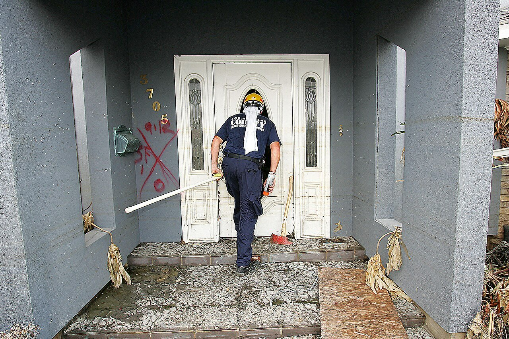
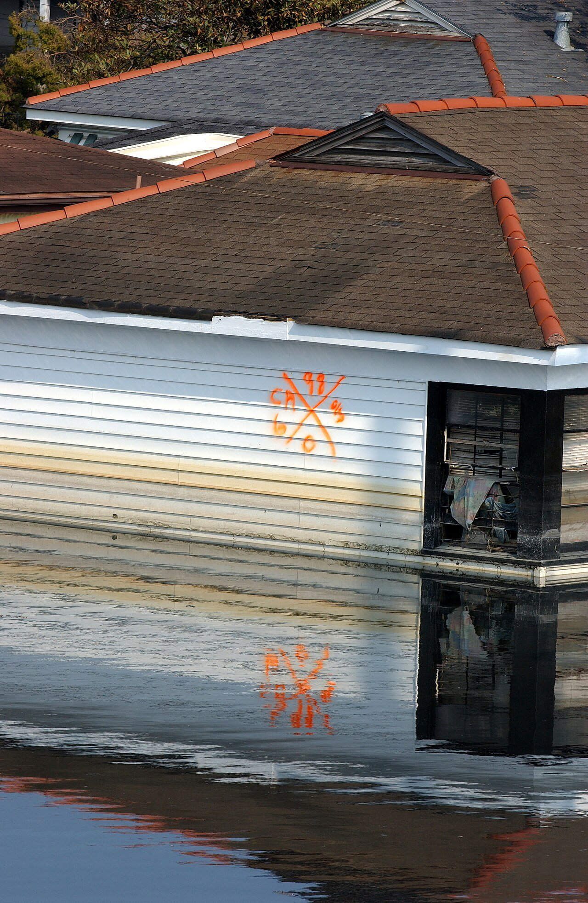
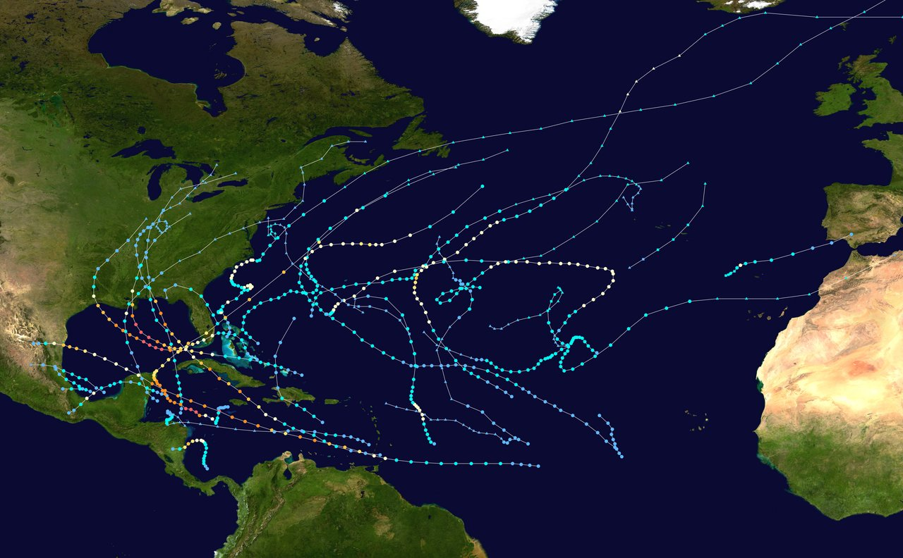

Blood Dazzler
Song of the Day · Louis Armstrong, “Do You Know What It Means to Miss New Orleans”
Lake Winnebago
FRST community event · October 2, 2026 · 12:40–12:50 · Open at 12:40 on YouTube
A numbered chorus: thirty-four sections
“34” · pp. 50–57
The headnote counts the dead: “Thirty-four bodies were found drowned in a nursing home.” The poem answers with thirty-four numbered sections. Many voices, one number.
The Lord’s Prayer · full prayer and its words in “34” · How do we understand divinity? And why?
- Section 18 is empty. A number, then nothing. One voice we never hear.
- The prayer comes in pieces. 14: “Our father / which art in heaven . . .” 21: “Hallowed be thy name.” 32: “Thy will be done.” Right after 21, section 22 bends it: “Hollow be our names.”
- The prayer skips a line. Between “Hallowed be thy name” and “Thy will be done,” the prayer says “Thy kingdom come.” Smith leaves it out.
- “Leave them.” comes three times, and it changes. 13: on its own line. 27: “And this scripture: Leave them.” 34: lowercase, split in two, the poem’s last words: “leave / them.”
Ask: who says “Leave them”? The page never tells you. What does the poem gain by not naming the voice?
St. Rita’s Nursing Home, September 2005
The real place behind the headnote, in St. Bernard Parish. The footage shows the empty rooms after the bodies were removed: wheelchairs in mud, photographs still on the walls. It ends with FEMA’s medical commander: “As long as there is one body floating in that water we are not doing a good enough job.”
The owners, Salvador and Mabel Mangano, were charged that month for not evacuating. Their lawyer said they had waited for a mandatory evacuation order from the parish that never came. In 2007 a jury acquitted them. The final count was 35 dead. Smith’s headnote keeps the first wire report’s 34. Sources: AP Archive, NBC News, Sept. 7, 2007, NPR, Sept. 8, 2007.
Content note: the footage shows empty body bags on beds.
Persona: the storm hears the prayer
“Their Savior Was Me” · p. 58
A persona poem gives the “I” to someone who is not the poet. Here the “I” is Katrina, and she has been listening to “34.”
snotty pleas addressed to the idea of Him
The number comes back from the headnote on p. 50, but now the storm is counting. The prayer comes back too: “They called / Lord, Lord, Lord.” The only one who hears it is the one doing the killing.
Ask: on p. 50 a wire report counts the dead. On p. 58 the storm counts them. What changes when the killer keeps the count?
Background: the search markings
“Looking for Bodies” · pp. 60–61 · “Give Me My Name” · p. 74
After the flood, search teams went house to house and spray-painted an X on each one they entered. The four corners of the X recorded the date, the team, any hazards, and how many people were found inside, living or dead. “Looking for Bodies” is written as instructions to the person opening that door: “Slowly push the door open with your foot.”




Ask: the X turns a home into a record: a date, a team, a number. Which poems in these pages push back against being turned into a number?
Content note: pp. 60–61 and 74 describe bodies.
A work chant: “Plunge. Push. Lift. Toss it.”
“Buried” · pp. 63–64
Three Pillars of Crafting Personas · instructions and working example
The epigraph is the official word. The city’s cemetery administrator: “families and funeral homes would have to supply grave-digging personnel.” The poem is what that sentence means for one man with a shovel.
PLUNGE. PUSH. LIFT. TOSS it.
Four words, four motions, four beats. The speaker names his own device: “I craft a chant purely for downbeat” (p. 63). A work song keeps a body moving when the work is too big.
- The chant runs whole three times: twice on p. 63, once more on p. 64.
- The fourth time it breaks: “Plunge. Push. Lift. Toss—” Just before, the memory of his boy has come in: “Where are yoooou?”
- The last line has no chant left: “I have to dig.”
Ask: what keeps him digging, and what breaks the beat? Find the line where the chant stops working.
Content note: p. 64 is about a child.
Sonnet: rebuilding in fourteen lines
“Rebuilding” · p. 70
A sonnet is fourteen lines with a fixed rhyme pattern. This one follows the English (Shakespearean) pattern: three groups of four lines, ABAB CDCD EFEF, then a rhyming pair, GG. Most lines have ten syllables, da-DUM five times: a RA-zored SKY, un-SURE of WHAT it YIELDS.
| Last word | Rhyme | |
|---|---|---|
| Line 1 | yields | A |
| Line 2 | faces | B |
| Line 3 | reveals | A |
| Line 4 | traces | B |
| Line 5 | wind | C |
| Line 6 | nails | D |
| Line 7 | thick-skinned | C |
| Line 8 | fails | D |
| Line 9 | work | E |
| Line 10 | damned | F |
| Line 11 | berserk | E |
| Line 12 | programmed | F |
| Line 13 | stain | G |
| Line 14 | rain | G |
“Yields / reveals” and “damned / programmed” are near rhymes: close in sound, not exact.
- One of the most orderly forms in the book, for a poem about putting things back. The rhyme keeps every line in its place, the way the builders try to.
- But Smith prints it as one block, with no break before the last pair, and her sentences spill over the line ends: “Each day reveals / inane thoughts of dance.” Order on the outside, spill inside.
- The rhyming pair lands the point: “to set chaos upright, scrub at the stain, / build our homes on rivers, waltz in the rain.”
Ask: is that tidy ending hopeful, or foolish? Who builds a home on a river?
Refrain: “They keep touching him”
“Golden Rule Days,” section I · p. 71
A refrain is a line that keeps coming back. “They keep touching him” comes four times in one stanza, and it is the stanza’s last sentence.
- The line breaks cut it up: “They keep touching / him,” and “They keep / touching him.” You keep running into it.
- The apology repeats too, in italics: “We’re sorry, we’re sorry,” “sorry, so sorry.”
- The repetition does to us what the hands do to him. It never stops. He is kept in “his role as child who drowns, again / and again.”
On Wednesday the repeated “and” piled things up. Here repetition holds someone in place. The poem calls it “soft rescues.”
Ask: what do the hands give him, and what don’t they? What would one sentence, said once, lose?
Content note: stay on p. 71. Section III of this poem (p. 73) prints a racial slur.
An alphabet list: the storms of 2005
“Siblings” · p. 75
Atlantic hurricanes are named in alphabetical order each season. Smith gives one line to each storm of 2005, Arlene to Wilma. One letter has no line.
The list jumps from José to Lee. Katrina is left out of her own family, then named in the last three lines: “None of them talked about Katrina. / She was their odd sister, / the blood dazzler.” The book’s title arrives two poems before the end.

2005 used up the whole list. After Wilma, six more storms were named with Greek letters, Alpha to Zeta. Smith’s list stops at Wilma.
Ask: why keep her out of the list? What does it mean that her siblings won’t talk about her?
Katrina · Clair de lune
“Weather is nothing until it reaches skin” · p. 76
Dakar · video from home
A friend of Teacher Ma sent this video from his own home in Dakar, Senegal.
A question for Smith on Monday
Before Monday: Patricia Smith, her life, her words, and your question.
Patricia Smith joins us by Zoom on Monday, October 12. Bring one question about a choice she made, with its page. A strong one names what she did and what she could have done instead.
- On p. 54, why leave section 18 empty rather than give every number a voice?
- On pp. 53–57, why leave “Thy kingdom come” out of the prayer?
- On p. 70, why a sonnet, and why print it as one block?
- On p. 75, why leave Katrina’s letter out of the list rather than give her a line?
Write your own. These show the shape: “On p. __, why ___ rather than ___?”
Word cloud · pp. 50–77
The most common word in these pages is name (12 times). Second is left (10). Where do they come? · Word clouds by section and whole book
Circle area shows frequency. Numbers show counts.
Scroll sideways to read every circle.
pp. 50–77 · 50 most frequent words, excluding common words such as the, a, and an.
Read all word counts
- name12
- left10
- rain9
- water9
- days7
- god7
- one7
- skin7
- way7
- arms6
- body6
- everything6
- got6
- hard6
- push6
- want6
- wet6
- black5
- blood5
- breath5
- child5
- heart5
- keep5
- know5
- leave5
- light5
- little5
- need5
- old5
- big4
- blue4
- done4
- dry4
- earth4
- eyes4
- fingers4
- girl4
- hair4
- hands4
- high4
- knew4
- lift4
- line4
- long4
- never4
- next4
- ocean4
- plunge4
- rot4
- rub4
Counting method
Counts use the supplied PDF’s OCR text, with checked transcription corrections. Poem bodies on printed pp. vii–viii and 1–77 are included; titles, headnotes, epigraphs, timestamps, internal section numerals, page numbers and front/back matter are excluded. Capitalization is ignored. Straight and curly apostrophes are treated alike; contractions and hyphenated words remain intact. Different word forms are counted separately. Email excerpts within “What to Tweak” count as poem body.
Monday’s community event · Wednesday’s listening
Monday, October 12: community event with Patricia Smith, via Zoom. Bring your question about a choice in Blood Dazzler, with its page number.
Before Wednesday, October 14: listen to all three recordings on the Wednesday listening page.
- Charley Patton, “High Water Everywhere, Part 1”
- Charley Patton, “High Water Everywhere, Part 2”
- Kansas Joe McCoy and Memphis Minnie, “When the Levee Breaks”
Listen to the recordings; the lyrics are there to help you follow them.
New Orleans second line
The second line is the people who join behind the band and parade leaders, walking and dancing. About the tradition.